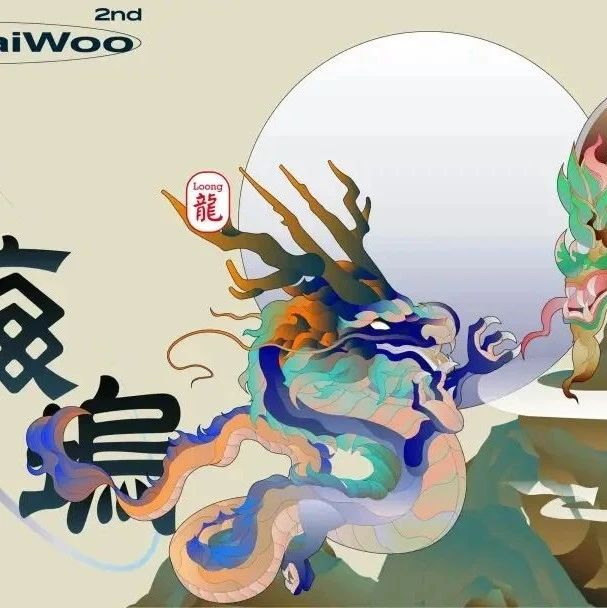

← Back to Archive
2024「山海坞·清迈」活动议程宣发！早鸟票火爆开抢 ~
作者: ShanhaiWoo
发布时间: 2024-09-02 13:55:08
山海坞｜一场真正有「生活」的科技与文化的 pop-up 盛会

2023年夏天，东北吉林，Web3从业者、AI探索者、生物科学家、人文社科、艺术家，各路思考者与建设者在「山海坞」 在这里，我们交流共学 Web3 与 AI 技术、组队参与黑客松比赛、在星空下的中州牧场进行 Soul Bound Talk、玩AR游戏、探索当地、清晨行山与冥想、Women Coding Camp...... 在坞民的流动和栖息中，我们重新理解自我与自然、与时代的关系，带出未来时代人类的诸多新生活方式—— 自由流动，全球栖息。 Building 山海坞是一个「现代版游民的 Town Hall」，是一个“世界水手”们停泊的锚点。 山海坞是一个将人从世俗精神的结构中剥离开来，为个体提供了自由安放主体性与主体间性的场域。 山海坞是一场脱轨之旅，脱离既定的生活轨迹，去听不同的声音、去连接多样的人、去看真实的世界、去一头扎进旷野之中。 「山海坞」是一个真正有生活的 pop-up 旅地。 在这里，坞民们延续了远古时期的部落集体协作，以共同生活（co-living）、协同创造（co-creating）、相互学习（co-learning）的方式，探讨 AI、区块链、创作者经济、组织与协作、身心可持续等核心议题。 我们希望联动更多亚洲社区，向世界展示华语社区 的力量 一年之后，山海之坞再度启程，一个前沿技术、先锋艺术、独特文化、创新生活相互交织的 pop-up village 在泰北高地升起！ 我们将在9/30-11/10相聚泰国清迈，邀请六大领域的先锋建设者250人，从世界各地奔赴于此，一起共居、共学、共建「山海坞」，探索人工智能、区块链、艺术与创作者经济、组织与协作、在地与数字游民、身心可持续 六大议题。 从北纬40到北纬18，中国东北平原到泰国北部山地，这一届的山海坞扬帆出海，向世界展示华语社区的力量，为东西加密社区的对话与交流打开一扇门。 作为最受全球数字游民欢迎的亚洲旅居地之一，清迈有着独特的生命力。热带雨林与城市景观交映，酸辣的北泰菜搭配着鲜甜的椰子，国际性的社区与本地烟火交织在一起。百年“佛”文化与慢生活的浸染中，这里的人们有着对生活与大地朴素而踏实的热爱，也有着对未来的希望与乐观。 山海坞·清迈—WooChiangmai，即将在这里发生。 我们驻居泰北大地，栖息山川雨林，把目光转向浩瀚的苍穹星辰，将思维与灵感投向无限深邃的人类未来，让无数关于科技与艺术的浪漫想象在篝火旁升起。
✦ 更有艺术家、作家、经济学家、社会学家、人类学家； ✦ 禅修、冥想、世界音乐、可持续教育、本地文化、引导术与中国功夫； ✦ 以及我们想象之外的 您 ，愿意深度思考，产生深度思想碰撞.... WooChiangMai 包含六个议题：人工智能、区块链、艺术与创作者经济、组织与协作、在地与数字游民、生活可持续。 计算机视觉、自然语言处理、计算认知与常识推理、机器学习、智能图形与交互等；在技术迭代背景下，探索生活的更多可能性
Layer1 & Layer2, ZK & Privacy, Infra & Data, Public Goods & Regen, Social, Culture & Philosophy, Security, DePIN
艺术、NFT，内容创作者，科幻作家，装置艺术家，视觉艺术，先锋实验者，解制文字、音乐、艺术、纪录片
经济学、社会学和人类学学者，组织行为学，数字化回归，古老文化传承的实践者，可持续农业合作社、公益自然保护区实践等
泰国历史与文化、泰语教学、佛教与寺庙探索、数字游民地图、可持续社区、本地市集与生活、侨民历史、新清迈生活等
国学、禅修、瑜伽、冥想、食育、露营篝火、太极拳、八段锦、博物学、中式养生各类在地活动等…
每周都会组织相关的常规活动，旨在促进主题和知识的分享，增进坞民之间的相互了解与情感联系，探索本地文化，并加强不同文化间的沟通与交流； 山海坞·清迈场地位于 The Wall，毗邻玛雅和One Nimman购物中心，地理位置优越，位于清迈市区最繁华的中心地带之一。便捷的地段，齐全的办公设施，良好的办公环境，有机的相互连接，让坞民们可以更好地共创共学。 WooChiangmai
6周的共居共创能带来什么？
跨越地域壁垒建立信任，重塑人与自然，与时代的关系，通过大规模协作和协同创新。 通过源于中国传统文化创造的超现实寓所「山海坞」 ，聚集跨领域的先锋建设者，利用人工智能、区块链、艺术与创作者经济、组织协作、在地与数字游民、身心可持续等领域的前沿技术，来探索和解决多方面的现实问题。 山海坞活动力图联动更多亚洲社区，在世界各地范围内构建一个有意义的 pop-up 旅地，向世界展示华语社区的力量，链接东西对话，面向分布式的未来生活。 我们致力于营造一个充满关怀、相互支持和专业性的环境，鼓励每位参与者自由表达并积极贡献。让内向的人也能闪耀，成为社区的重要成员。 不仅是发起自己的活动，参加别人的活动，了解行业动态与机会； 探索工作与生活的平衡，链上与链下的融合，智识和身体的谅解； 更可以相互理解与支持，在离开之后，全国各地，乃至世界各个角落； 最终， 「山海坞」成为每个成员以他们对社区最浪漫的渴望所构建的理想之地。 雨霖铃·山海坞营地月夜 by Jill
黑客松盛，众人欢聚，共享风月良辰，笑谈座中。
网状天地，雀跃码海，或足履磐石，或拂轻云。
登崇山之乐，无如图画而乐，忘尘世喧嚣而歌。
锐志与时并进，不减当年。
欢迎跟着山海坞的脚步一起来到这座迷人的泰北小城「清迈」！开启一场别样的探索🏄♀️： ✔ 神兽们（演讲嘉宾和贡献者）奔腾咆哮的奇幻之旅。 欢迎您的加入，和我们一起搭建独一无二的“山海坞” ！ 早鸟票火爆开售🔥
扫码填写报名表单
让我们更好地了解你👇
浏览器端打开🔗
https://tally.so/r/w2kpgL
浏览器端打开 🔗
https://t.me/+oK48BwpNhlRjN2U1
Full Pass / 全程票 199 USD
Weekly Passes / 周票 50 USD
Full Pass / 全程票 269 USD
Weekly Passes / 周票 80 USD
*早鸟票 Early Bird (Now until Sept 15)
*原价票 Regular Price (After Sept 15)
不需要，您不必全程参与山海坞。您可以在任何方便的时间来山海坞，停留整月、一两周，甚至几天。
当然，我们建议您尽可能长时间地待在山海坞，这样您将获得最丰富的深度体验。
⚠️申请通过后将会发送购票链接
另：学生可以申请奖学金计划
▶九月山海预热｜共写日记进行中：与自我对话，陪你一起写出成长轨迹
报名通过的一个月长居者
*报名通过的山民，希望驻地时间至少2周*
权益：
* 可以邀请2名海民；
* 参与山海坞建设及游戏规则的制定；
* 拥有山海坞空间、设备的使用权；
权益：
可以参与票有效期内，山海坞组织的各项活动（特殊要求的活动除外）；
权益：
被邀神兽可以邀请1名山民，2名海民（升级神兽无该权益）
申请成为演讲嘉宾
https://tally.so/r/3Xq41e
申请成为赞助商、媒体及合作伙伴
https://tally.so/r/nrKe8M
山海坞是以 Web3、人工智能、创作者经济、可持续等为主要议题，邀请各领域前沿思考者与建设者，共同进行为期一个月的共居共创共学活动。
Website: www.shanhaiwoo.com
Telegram： https://t.me/+oK48BwpNhlRjN2U1
Twitter： https://twitter.com/shanhaiwoo
联系我们：contact@shanhaiwoo.com